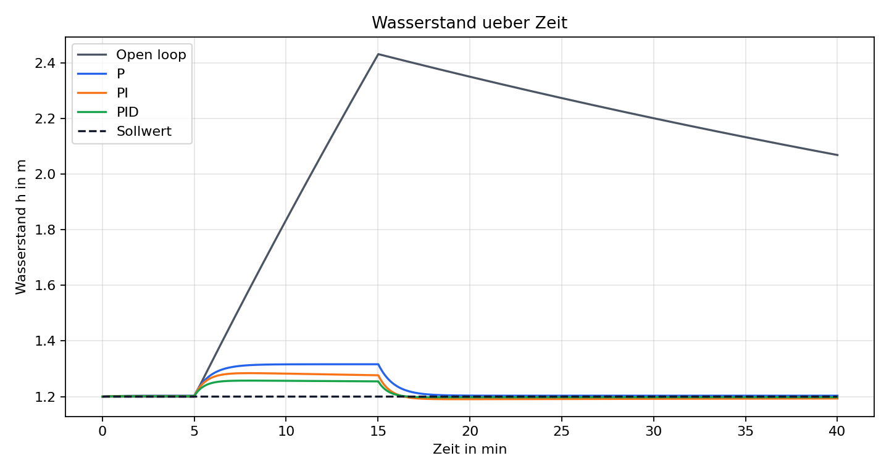
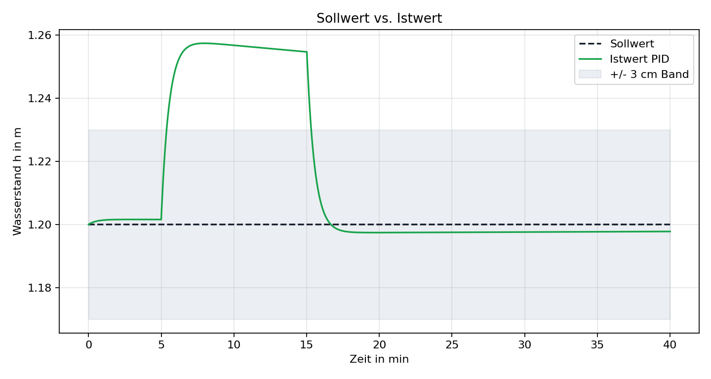
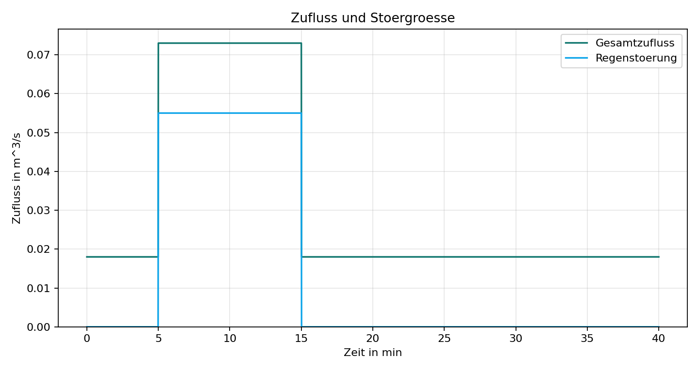

Kennwerttabelle
Open Loop, P, PI und PID im Vergleich
| Regler | Ueberschwingen [m] | Einschwingzeit [s] | Stationaerer Fehler [m] | Energie [kWh] |
|---|---|---|---|---|
| Ungeregelt | 1.2309 | - | 0.8871 | 0.0200 |
| P | 0.1162 | 975.0 | 0.0032 | 0.1887 |
| PI | 0.0843 | 931.0 | -0.0071 | 0.1914 |
| PID | 0.0574 | 919.0 | -0.0022 | 0.1910 |
Plots
Automatisch erzeugte Visualisierungen

Wasserstand ueber Zeit
Der ungeregelte Betrieb steigt stark an, waehrend die Regler den Pegel begrenzen.

Sollwert vs. Istwert
Der PID-Regler faengt die Stoergroesse ab und naehert sich wieder dem Sollwert.

Pumpenleistung
Die Stellgroesse bleibt normiert und zeigt die Reaktion auf das Regenereignis.

Zufluss und Stoergroesse
Der zusaetzliche Regenzufluss ist als rechteckige Stoergroesse modelliert.